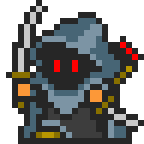

Вивертвимір та нескінченні підземелля, або чому читати корисно
Цей гайд розрахований на тих хто вже має уявлення про клас Вивертвимір, знайомий з його пасивними навичками та розуміє основні механіки бафів\дебафів.
Гайд написаний гравцем Lion777 🦵🦶🦿
Окрема подяка гравцям  Fey Biting Fox та Sap1 за допомогу з написанням.
Fey Biting Fox та Sap1 за допомогу з написанням.
Та трохи Їжачку.
Якщо зовсім нічого не зрозуміли починайте вивчати з самого початку.
 Гайд для класу Вивертвимір (ENG)
 Google Docs в якому показані білди, обладунки, зброя для класу вивертвимір на різні
випадки життя.
Google Docs в якому показані білди, обладунки, зброя для класу вивертвимір на різні
випадки життя.
Якщо з попереднього усе зрозуміло - тоді почнемо.
Що таке ендлеси?
Ендлеси, вони ж безкінечне підземелля, вони ж endless mode - режим підземелля у якого немає кінця, завжди 1 ворог на поверх, з кожним поверхом складність ворогів зростає, зростає шанс зустріти ворога берсерка, але й винагорода з суперників теж зростає.
Чому вони важливі? Ендлеси це режим у якому ви будете фармити орни, а ще й досвід, до кінця гри. Більше ніж в ендлесах орн не дають ніде.
Будь який забіг в ендли можна розділити на 3 етапи:
🧙 Забаф
💰 Фарм
💀 Виклик
Для кожного етапу потрібні різні речі й пети, тому далі детально розглянемо кожний етап
🧙 Етап перший - Забаф.
Він починається як тільки ви заходите в ендлес.
Клас
Беовульф (Beowolf)
Спеціалізація
 Рейдер (Raider)
Рейдер (Raider)
Еквіп
Голова
Каптур Династії () або Стара Корона Нортенів ()
Тіло
Будь яке тіло що дає велику кількість варду й захисту або Обладунки династії
Ноги
Найкраще буде мати “Диявольські черевики повсталого ворона”(якість або зламана або орнатна) - дають 8% шансу випередження. “Також гарний варіант Чоботи повсталого розбійника Безодні” - дають 5% шансу крита і 5% влучності. Якщо немає будь які ноги на велику кількість варду й захисту.
Зброя
Будь-яка зброя що дає вард.
Офф-хенд
“Книга дракона” або “Книга дракона Х”, якщо немає будь який щит на велику кількість варду.
Аксесуари
“Архігаджет повсталого”, “Каблучка Анку”.
Спомин
В цілому байдуже, але для зручності буде найкраще спомин на % регену варду.
Трохи про еквіп
Сет Династії дає навичку “Прокляття Сехмет” - це постійне “Зміщення крові” яке не дає нам відновлювати здоров’я з критичних ударів. Потрібна одна будь яка частина з цього сету для розбійника яку можна отримати з рейдового боса “Великий Сфінкс”, її якість не важлива, як і рівень прокачки, вона потрібна тільки для того щоб отримати баф, після чого її можна замінювати. Після того як ви вдягли частину з цього сету, в списку навичок з’явиться “Прокляття Сехмет” - його потрібно додати на панель навичок як будь-який інший навик. Книга Дракона дає баф “Захоплення драконом” що збільшить дамаг стихією дракона і дасть імунітет до цієї ж стихії, що доволі зручно і може врятувати. Окрім того Захоплення Драконом не дає вразливості, на відміну від захоплення базовими 6и стихіями.
Пети яких можна використати на етапі забафу
Повсталий скелезуб - один з найкращих варіантів, значно прискорить стак варду. Ортанітовий голем - те ж саме що й скелезуб, але трохи гірший в еффективності Послідовник Апполіона - дає захоплення певною стихією, використовувати тільки якщо немає “Книги Дракона” Керберос - дає захоплення випадковою стихією, у такому випадку чекаємо поки він дасть захоплення стихією вашої фракції. Знову ж таки використовувати тільки якщо немає “Книга дракона” Химера / Лиха химера - дає баф “Берсерк 2”, використовувати в кінці забафу для отримання берсерка
Послідовність дій і навичок на етапі забафу
Ортанітний вард Священний притулок 1\2 Стійкість голема Бар’єр 2 Поклик брунгільди 1\2 Швидкість виверни 2 Пісня виверни Вард Балору або Вард Аннуну 1\2\3 поки не отримаємо захист від 4х основних стихій Пустощі міміка або Міць ведмедя Панацея щоб зняти усі дебафи (якшо вони є) Змінюємо пета на Химеру \ Лиху химеру Берсерк 3 від спеціалізації Гриб берсерка Прокляття Сехмет (якщо є) Змінюємо клас на Вивертвимір Хода Гуннра
Чому потрібен Беовульф? Так як зараз спеца прив’язана до класу це дає змогу не витрачати зайві орни для зміни спеціалізації, а також не витрачати час на зміну набіру спорядження, бо на Беовульфі можна залишити готовий набір речей й навичок.
Якщо пет не накинув одразу берсерка, можна трохи поклікати “Ортанітний вард” поки Химера не накине берса.
Книга Дракона (якщо є) дає баф сама по собі, але за час накидання усіх інших бафів цей на вас вже має бути, якщо ні - доведеться трохи побігати з нею поки не отримаєте баф.
На момент виходу з ендлу щоб змінити клас на Вивертвимір, також варто використати ітеми що збільшать винагороду, а також трохи піднімуть шанс дії пета:
Щаслива монетка
Щаслива срібна монетка
Малий звірячий еліксир
Звіряче пойло
Еліксир досвіду
Варево Вулкана
Також варто зробити щоденний квест на бонус орн. Якщо є Освячена свічка - також можна використати.
На цьому етап бафу закінчується, і починається наступний.